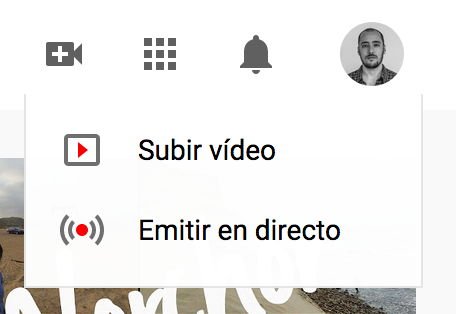
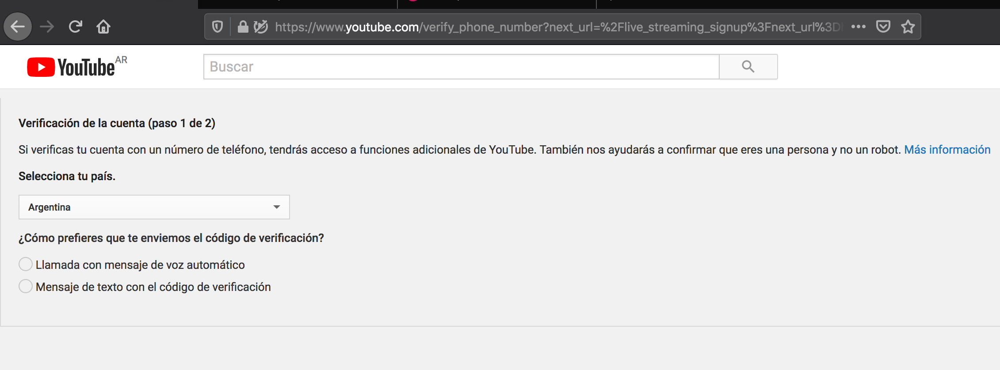
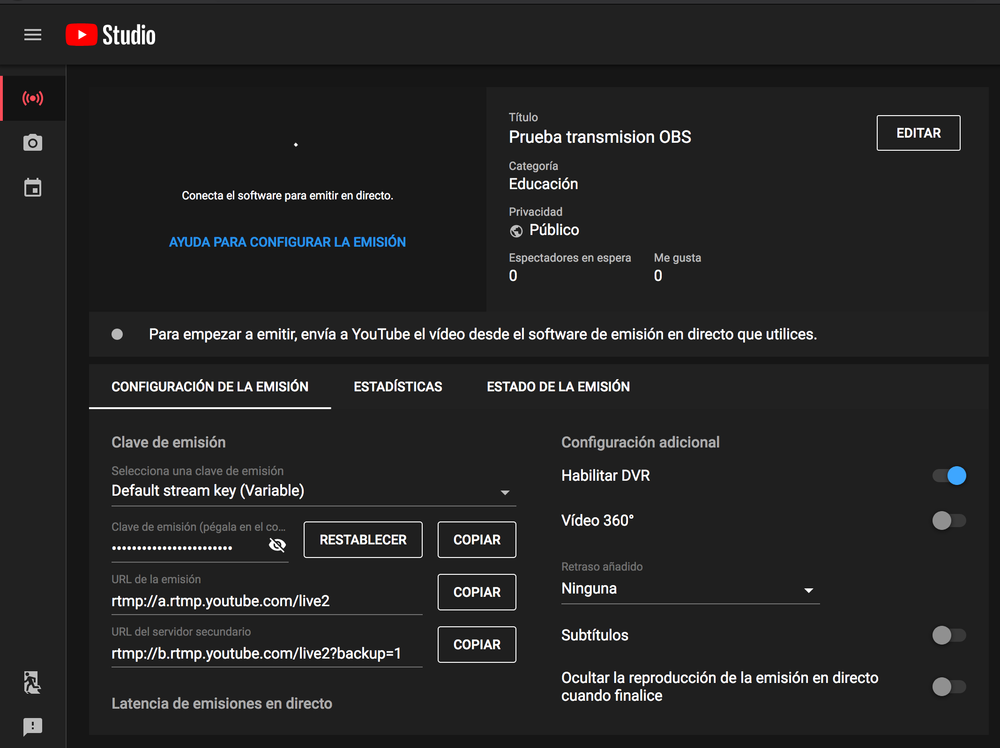
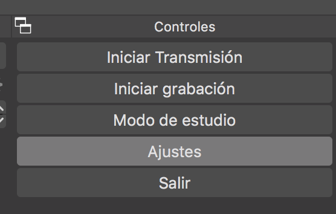
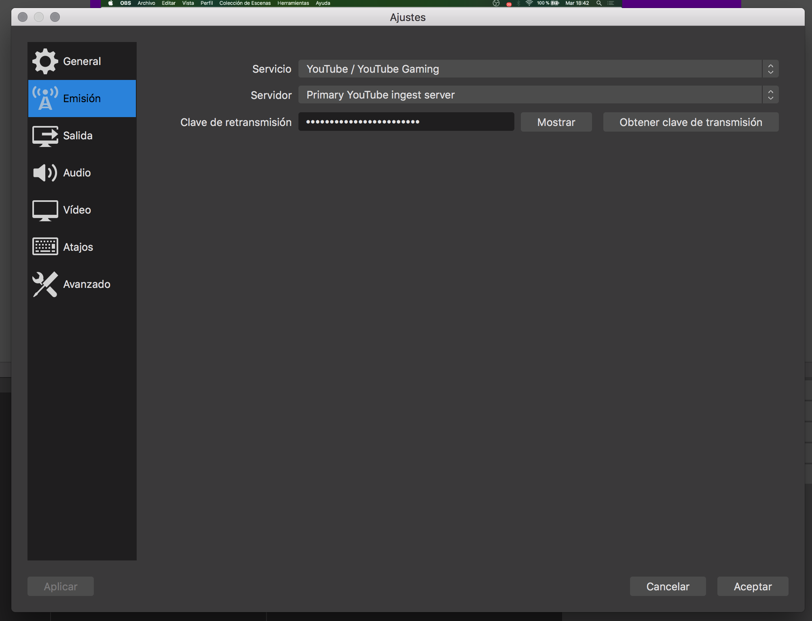
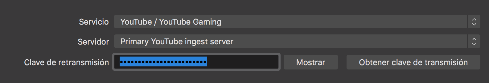
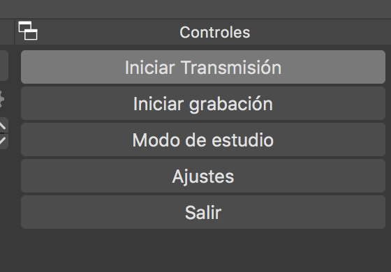
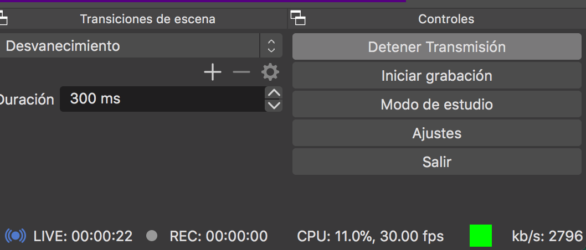

Streaming en vivo con OBS vía YouTube
Una vez que tengamos manejo de las herramientas de grabación y la lógica de funcionamiento de OBS, hacer una transmisión en vivo es bastante sencillo. Les comparto los pasos con captura de pantalla:
1. Ingresar a https://www.youtube.com/.
2. Clic en el ícono de la cámara en la esquina superior derecha. En el desplegable clic en Emitir en directo

3. En caso que nuestra cuenta no esté verificada nos figurará el siguiente mensaje:

En este caso debemos ingresar nuestro número de teléfono y seguir los pasos. El proceso de verificación puede demorar 48 hs. Debemos esperar la confirmación por mail. La cuenta verificada nos sirve también para subir videos de más de 15 minutos.
4. Una vez nuestra cuenta esté verificada repetir pasos 1 y 2. Nos aparecerá la siguiente ventana:

En donde dice Clave de emisión, hacer clic en el botón Copiar.
5. Abrir OBS, clic en Ajustes.

6. Hacer clic en la pestaña Emisión, ubicada en la barra izquierda.

7. Pegar la Clave de youtube en el campo Clave de retransmisión. Y hacer clic en Aceptar (abajo a la derecha).

8. Clic en Iniciar Transmisión.

Al cabo de unos segundos nos aparecerá el estado de la transmisión en la barra inferior.

9. Volver a YouTube y dar clic en Iniciar transmisión (botón superior derecho).
¡Y listo! Estamos transmitiendo en vivo. Podemos copiar el enlace del video desde el botón Compartir de Youtube.